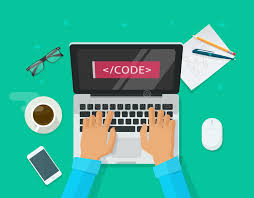

Transformando ideias em soluções digitais inovadoras.

Sobre Mim
Sou um estudante de ADS (Analise e Desenvolvimento de sistemas).Tenho 17 anos e estou no segundo ano do ensino médio.
Minhas habilidades
uma pessoa com comunicação clara, meu principal objetivo é garantir que as ideias sejam transmitidas de forma simples, direta e sem ambiguidades. Tento sempre me expressar de forma que o outro compreenda facilmente, seja ao explicar um conceito técnico ou ao responder uma dúvida. Acredito que a comunicação eficaz é uma via de mão dupla, então busco não só ser claro ao falar, mas também atento ao que o outro está dizendo.
Sou colaborativo, comprometido e sempre disposto a ajudar meus colegas. Valorizo a comunicação aberta, a adaptação às necessidades do time e o foco no objetivo comum. Busco contribuir com minhas habilidades e estou sempre pronto para apoiar o time, garantindo o sucesso do projeto e o aprendizado conjunto.